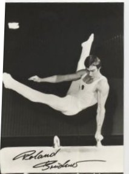

Roland Brückner (GDR)
1979 World FX Champion
1980 Olympic FX
Champion

Medal Total
- Olympic Games: 1 Gold, 1
Silver, 3 Bronze
- World Championships: 1
Gold, 1 Bronze
- World Cup: 4 Gold, 1 Silver, 1
Bronze
- European Championships: 1
Gold
Roland was born on December 14,
1955, and began gymnastics in 1964. His first coach was Rolf Kuhn (Lichtenberger
Training Center in Berlin). Bruckner progressed and eventually transferred
SC Dynamo Berlin under coach Heinz-Dieter Schulze. He retired in 1984, after the
Alternate Games, and became a coach. Roland was voted the 1984 Gymnast of
the Year by GDR sports journalists. He has two children, Sandra and
Thomas.
-
- Competition Results
-
- 1971
GDR Children's and Youth Spartakiade: 1st AA, 1st FX, 1st PH, 1st R, 1st V, 1st PB, 3rd HB (Class II)
- 1972
GDR Children's and Youth Spartakiade: 1st AA, 1st FX, 1st R, 1st V, 1st HB, 2nd PH, 3rd PB (Class II)
- Masters of Tomorrow Junior Tournament: 1st AA
- 1973
Jr. Friendship Tournament (Druzhba): 1st Team, 4th AA, 4th PH, 4th
HB, 5th V
1975
GDR Championships: 2nd AA, 1st FX, 1st V
-
- 1976
- GDR Championships: 1st AA, 2nd FX, 2nd PH, 2nd R, 2nd HB, 3rd PB
- GDR-ROM Dual Meet: 1st AA
- GDR-USSR Dual Meet: 10th AA
- Olympic Games: 3rd Team, 4th FX
-
- 1977
- DTV Cup: 1st AA, 2nd FX, 2nd PH, 2nd R, 2nd HB, 3rd PB
- GDR Championships: 1st AA, 1st FX, 1st PH, 1st PB, 1st
HB
- GDR-ROM Dual Meet: 1st AA
- GDR-USSR Dual Meet: 2nd Team, 4th AA
- Golden Sands International: 1st AA, 1st FX, 1st PH, 1st RG, 1st PB
- Moscow News: 19th AA
- Paris Grand Prix: 2nd AA, 3rd V
- Riga International: 15th AA
- World Cup: 3rd V, 5th AA, 6th FX, 7th
PB, 7th HB, 8th PH, 8th R
-
- 1978
- American Cup: 2nd AA
- Berlin (GDR) International: 1st AA
- FRA-GDR Dual Meet: 1st Team, 1st AA
- GDR Championships: 1st AA, 1st FX
- World Championships: 3rd Team,
13th AA, 7th FX
- World Cup: 11th AA, 1st FX, 2nd V
-
- 1979
- Chunichi Cup: 2nd AA
- DTV Cup: 1st AA
- GDR Championships: 1st AA
- Tokyo Cup: 1st FX, 3rd R, 5th HB, 6th PB, 7th PH
- World Championships: 4th Team, 6th AA, 1st FX,
5th V, 7th PB
- World Cup: 7th AA, 4th PH, 5th FX
-
- 1980
- Cottbus International: 1st AA, 1st FX, 1st PH, 3rd
R
- GDR Championships: 1st AA, 1st FX, 1st
R, 1st V
- GDR-SUI Dual Meet: 1st Team, 1st AA
- Olympic Games: 2nd Team, 5th AA, 1st
FX, 3rd V, 3rd PB,
4th PH, 4th R
- World Cup: 4th AA, 1st FX, 1st
PH, 1st V, 5th R
-
- 1981
Chunichi Cup: 2nd AA
- Cottbus International: 2nd AA, 1st V, 1st
PB, 2nd R,
2nd HB
- European Championships: 4th AA, 1st FX,
4th V, 6th PH, 6th R, 6th PB, 7th HB
- GDR Championships: 1st AA, 1st FX, 1st PB, 2nd PH, 3rd R, 3rd V
- GDR-USSR Dual Meet: 1st Team, 1st AA,
1st FX, 1st V, 2nd PH, 2nd R, 3rd PB
- Paris Grand Prix: 1st PH, 1st V, 2nd FX, 2nd R
- World Championships: 4th Team, 5th AA, 6th
R
-
- 1982
- Chunichi Cup: 7th AA, 1st FX
Cottbus International: 1st AA
- DTV Cup: 1st AA
- GDR-SUI-USSR Tri-Meet: 2nd AA
- Tokyo Cup: 3rd HB
- World Cup: 6th AA, 4th HB, 5th R, 6th FX, 6th PB, 8th
V
-
- 1983
- GDR Championships: 3rd AA
- GDR-NOR Dual Meet: 1st Team, 2nd AA
-
- 1984
- Beijing International: 7th AA
- Cottbus International: 1st AA
- GDR Championships: 4th AA, 1st FX
GDR-SUI Dual Meet: 1st Team, 4th AA
- Olomouc (CSSR Spartakiade): 12th AA
(prelims), 1st FX
Riga International: 6th AA
-
This page was created on November 9, 1997 and was
last updated on May 16, 2026.
© Gymn Forum